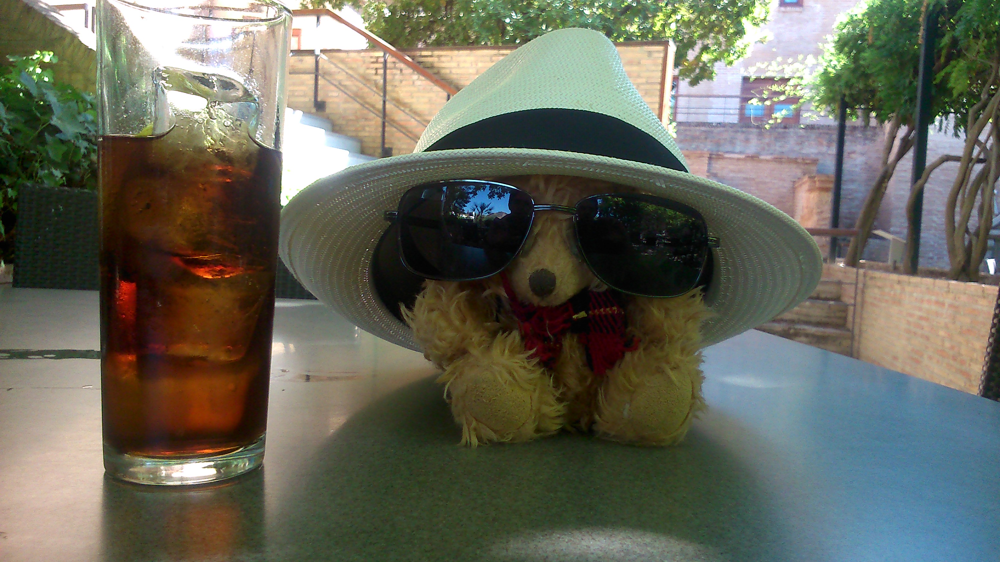
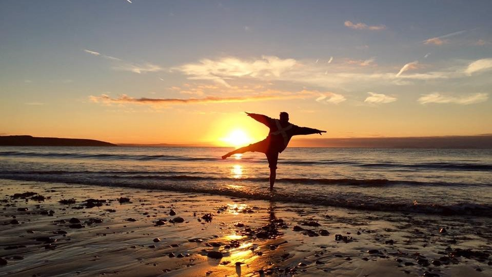
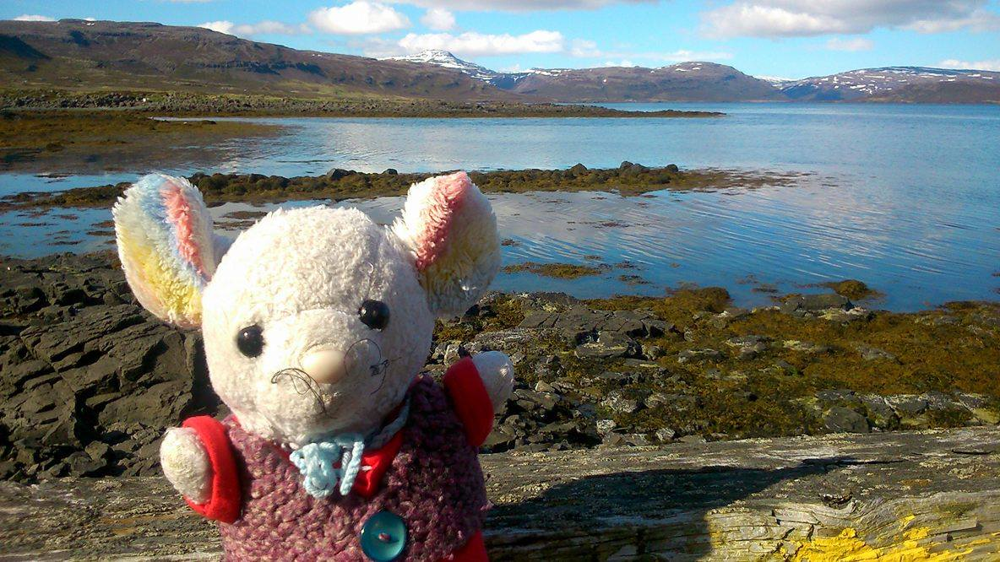

Helping Paw
Helping Paw Medical Centre is a friendly local GP Surgery and specialist Gastroenterology clinic. Dr H. Paws is recognised as a world leader in the emerging field of Thermo-tactile Therapy.
Evans & Father Detective Agency
Evans and Father Detective Agency is a small independent artisanal Private Investigation service, headquartered within Squirrels' Rest.
Cafe de Petit Dejuner

Cafe de Petit Dejuner is the premier provider of breakfast, second breakfast, elevenses and brunch in Squirrel's Rest.
Chez Bear
Description 4
mooli
mooli is a sardonically implausible entrepot of potential unrealised antiques, curated by an impudent murine conservator by the name of "B-Mo". It was previously psycho-potentially realised within an abandoned shipping container in Falmouth, Cornwall, but, for convoluted tax reasons, has now moved to a bijou rodent sanctorium deep in the Cheshire countryside.
Comments
It's really great!
- Happy Squirrel
This is my favourite place in the whole world!
- other Happy Squirrel